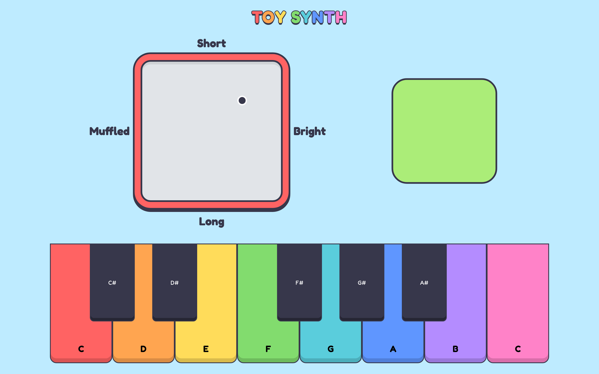
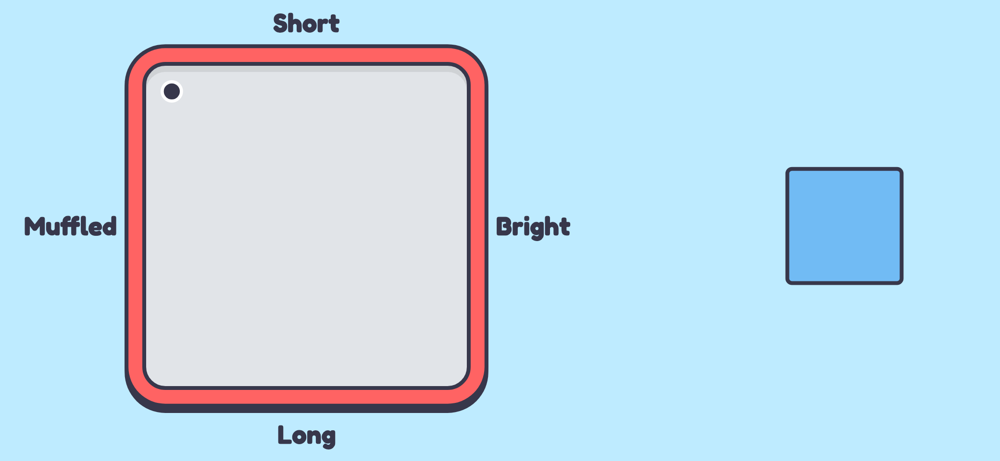
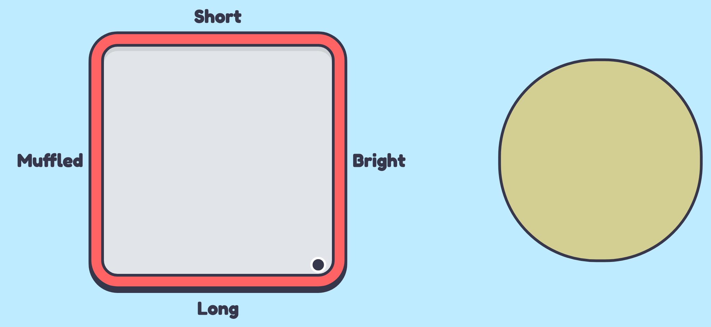
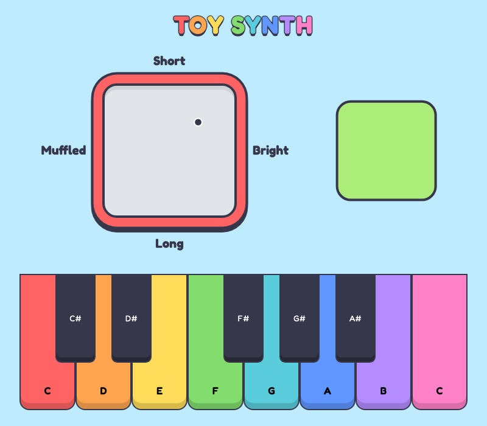
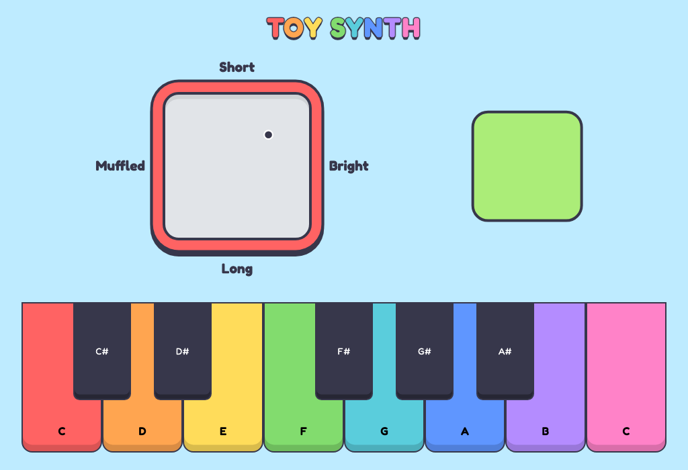
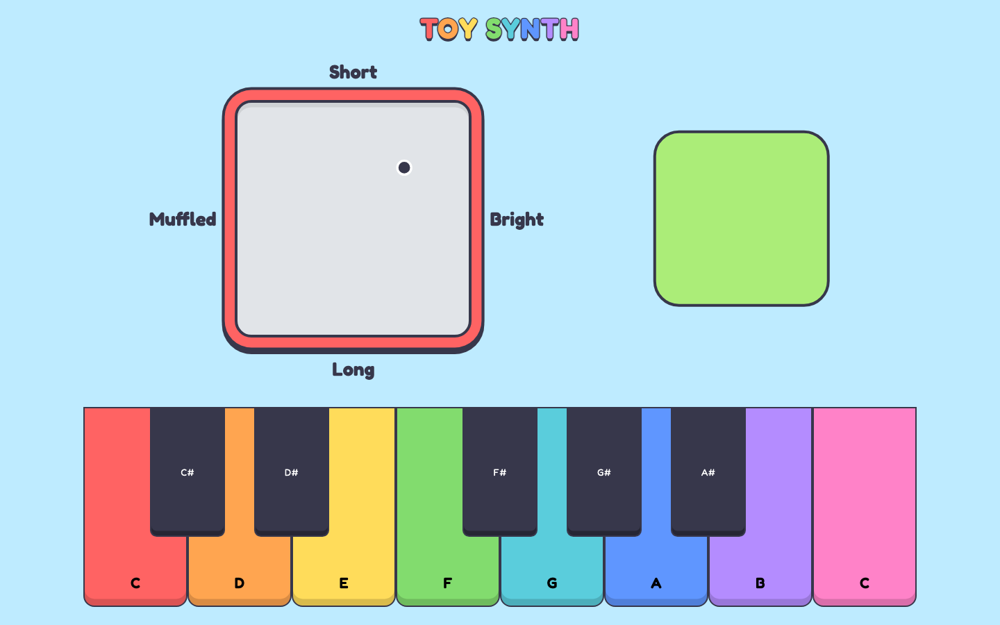
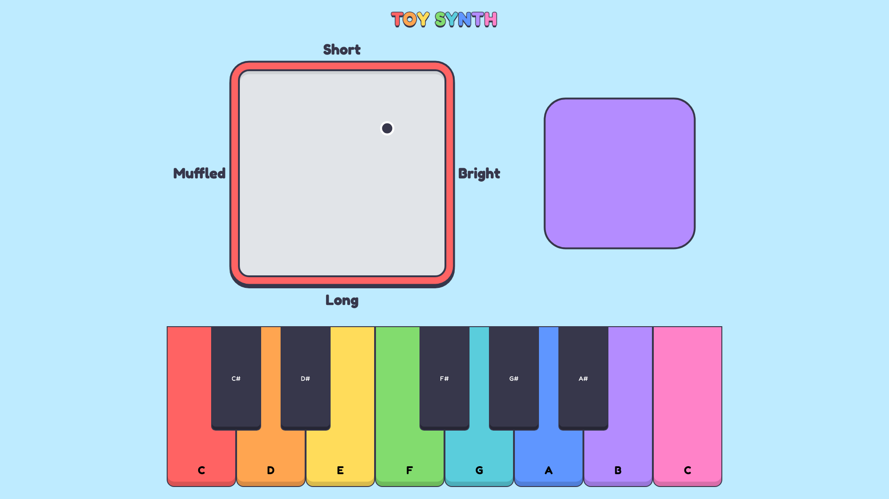

Toy Synth
Toy Synth is a browser-based synthesiser designed as a musical toy for toddlers. It combines a large, rainbow coloured keyboard for playing notes with a spatial input pad that changes how those notes sound. Instead of technical controls like filter frequency and attack time, children move a marker around the pad to make the sound more muffled or bright, and to make notes start sharply or swell in slowly. A large shape next to the pad changes its size, roundness and colour as the marker moves, and pulses each time a note is played, giving children a clear visual link between what they do and what they hear.

My earlier assignments can be found using the links on the left, and my GitHub profile and community of practice Miro board are linked at the bottom of the page.
Design Scenario: Musical Toy for Toddlers
Prompt
Design a way for young children with minimal language skills to explore music.
Context
Browser based musical instruments offer users the ability to dynamically perform music and explore complex audio design. While these interactions allow for a depth of control, they can be intimidating for many adult users, let alone young children whose language skills are still developing.
Response to the Scenario
I see the purpose of this instrument less as teaching toddlers how to play music, and more as giving them a space to explore and discover sound for themselves. Toddlers learn by trying things and watching what happens, so Toy Synth is designed around the connection between an action and its result rather than around rules or instructions. Underneath it is still a real synthesiser with an oscillator, a filter and an envelope, but I don't present these as technical controls, I hide them behind a single spatial pad that children can explore through movement. In Assignment 1 I identified three values to guide the design, approachability, playfulness and feedback, which are discussed below along with the worth of the instrument.
Approachability
The instrument needs to be usable with minimal reading or explanation. The keyboard is the largest element on the screen, with big, chunky keys that are easy for small hands to hit, and a piano is something most children will already recognise. The pad only uses four short words around its edges (Short, Long, Muffled and Bright), and these are supported by the visuals rather than relied on. The cursor turns into a hand over the pad to show that it can be grabbed, and every position on the pad makes a valid sound, so there is no wrong way to use it.
Playfulness
I wanted Toy Synth to look and feel like a physical toy rather than a piece of music software. The keys are styled like a toy piano, with a different rainbow colour for each note, rounded edges and thick outlines, and the pad is designed to look like an Etch A Sketch (recognisable for kids) with a grey screen inside a red frame. The title uses the same rainbow colours as the keys so the whole interface feels like one toy. Because there is no correct outcome, children are free to experiment, and the complexity of the synthesiser is something they discover through play rather than something they have to learn first.
Feedback
Every action produces both a sound and a visual response. Keys sink down and darken when they are played, and the shape next to the pad changes as the marker moves, getting bigger and warmer in colour as the sound gets brighter, and changing from a sharp square to a soft circle as the attack gets longer. The shape also pulses each time a note is played, quickly for a short attack and slower for a long attack, so children can see the change in the sound as well as hear it. Research on young children notes that toddlers "can't pay attention for too long" (McQuillan et al., 2021), so this immediate feedback is important for keeping them engaged and helping them understand that their actions are what change the sound.
Worth
Similar to Little Alchemy 2, which I looked at in A1, the worth of Toy Synth comes from the sense of discovery. Children can begin by simply pressing keys, then gradually work out that moving the marker changes how those notes sound. Without needing any musical vocabulary, they are building an early understanding of ideas like pitch, tone and how a sound starts, which gives the instrument value beyond just making noise.
Core Features and Design System
Toy Synth has two main ways to interact with it: a keyboard for choosing which notes to play, and a spatial input pad for changing how the notes sound. A shape next to the pad then shows the effect of both, so every action has a visual response as well as a sound. Because browsers don't allow sound to play until the user interacts with the page, the instrument opens with a short message reminding the user to check the volume, and pressing "ok" starts the audio. The code for the instrument can be found in my Toy Synth GitHub repo.
Keyboard
The keyboard covers one octave from C to C. Notes can be played by clicking the keys, or by holding the mouse down and sweeping across them so children don't need to click each one precisely. Notes can also be played with the computer keyboard, using A S D F G H J K for the white keys and W E T Y U for the black keys, following the same layout as a piano which is good for real practice. This gives toddlers (and the adults playing with them) a second, faster way to play, which I felt was missing from the online toy piano I looked at in A1. The synth is polyphonic so several notes can be played at once.
Spatial Input Pad (Extended Technique)
The extended technique I used in Toy Synth is spatial input, where the position of the mouse controls the parameters of the sound. When the user presses down on the pad and drags, the marker follows the mouse, and when they let go it stays where it is, so the sound stays the same until they decide to move it again. Each time the mouse moves, its position is converted into a number from 0 to 100 for each axis, and these numbers set two parts of the synthesiser:
- Horizontal (Muffled to Bright): controls the frequency of a low-pass filter, from 200Hz on the left to 5000Hz on the right.
- Vertical (Short to Long): controls the attack of the envelope, or how long a note takes to fade in, from 0.01 seconds at the top to 1 second at the bottom.
// X axis controls filter frequency
filter.frequency.value = 200 * Math.pow(25, x / 100);
// Y axis controls envelope attack
synth.set({
envelope: {
attack: 0.01 + (y / 100) * 0.99,
},
});Our ears notice changes in low sounds much more than changes in high sounds, so the filter changes by a bigger amount the further right the marker goes, making the same distance sound like the same amount of change anywhere on the pad. I chose filter and attack because they make clear, noticeable changes to the sound while staying simple to explore, which I found while testing different combinations in my A2 prototypes. The spatial input code was inspired by Patrick's XYController example.
Shape Feedback
Next to the pad is a large shape that changes with the marker. Moving towards Bright makes it bigger and changes its colour from cool blue to warm yellow, and moving towards Long changes it from a sharp square to a soft circle while its colour becomes more pastel. This is based on the idea that people tend to link sharp, spiky shapes with sharp sounds and round shapes with soft sounds. Every time a new note starts the shape also pulses (to give extra visual feedback), quickly for a short attack and slower for a long one. The pulse is made with the Web Animations API and always starts from the shape's current size, so when keys are played quickly the pulses blend smoothly into each other.


Design System
The design system is based on a physical toy piano. Every element shares the same visual language of thick dark outlines, rounded corners, bright colours and a darker edge along the bottom that makes things look chunky and pressable, so the whole interface is like one toy and hints to toddlers that things can be pressed and moved.
Layout: The pad and shape sit across the top with the keyboard along the bottom, similar to OTS-01 from A1. The keyboard is the largest element because it is the most familiar starting point for a toddler, and everything fits on one screen without scrolling.
Typography: Fredoka is a rounded and friendly typeface that matches the toy-like shapes. Text is kept to a minimum since the audience can't read yet, with only four short labels on the pad for the adults playing alongside, and the note letters sit at the bottom of the keys so the black keys don't cover them.
Colour: Each white key has its own rainbow colour, stored as CSS variables and reused for the title, pad frame and "ok" button so the colour scheme stays consistent. Outlines and text use a dark navy instead of pure black which aims to keep good contrast while feeling softer. Because the shape changes size and roundness as well as colour, the feedback never relies on colour alone.
Motion: Motion is only used as feedback. Keys sink down when played, the shape fades between colours, its pulse is timed to the attack, and the cursor changes from an open to a closed hand while dragging the marker.
Responsive Design
Toy Synth is fully responsive, scaling smoothly with the window
instead of jumping between fixed layouts. Its main sizes are CSS
variables worked out with clamp(),
min() and calc() from the window's width
and height, so each element stays at full size until it runs out of
room, then shrinks just enough to keep everything on screen. It
works in both Chrome and Firefox across all four screen sizes:
| Screen size | Width | How Toy Synth adapts |
|---|---|---|
| Medium | Less than 840px | The shape shrinks first so the pad stays large enough to use, and the keyboard grows taller to fill the spare height. |
| Expanded | 840px to 1199px | The keyboard fills the window width, with the pad, shape and labels scaling down to fit. |
| Large | 1200px to 1600px | The keyboard reaches its full width, with the pad and shape at the same size above it. |
| Extra-large | Greater than 1600px | Everything reaches its maximum size and the extra space is shared evenly around the instrument. |




Commit Logs
These are the commit logs for the final version of Toy Synth, taken from the main branch of my Toy Synth GitHub repo and listed from oldest to newest.
Commit Logs
| Author | Date | Subject | Body |
|---|---|---|---|
| hamishrmit | Wed Jul 29 15:16:03 2026 +1000 | init project | added in basic files, linked into html, added a sound button that works |
| hamishrmit | Wed Aug 12 14:56:42 2026 +1000 | added dialog button and audio init | created dialog pop up with button to close it, and added event listener on dialog close to start the audio system |
| hamishrmit | Wed Aug 12 15:56:23 2026 +1000 | added font, colour border in css | obtained and embedded a font from google fonts, created colour variables, edited borders |
| hamishrmit | Wed Aug 12 16:14:42 2026 +1000 | updated css with my preferred colours | changed some of the default colours from Patrick's example to colours I prefer more |
| hamishrmit | Wed Aug 19 15:49:00 2026 +1000 | added event listeners and key button | added a second button and created event listeners and synth for it |
| hamishrmit | Wed Aug 19 15:58:44 2026 +1000 | css and js edge case | added in some visual feedback and handled edge cases for key press |
| hamishrmit | Wed Aug 19 16:18:43 2026 +1000 | began implementing spatial input | using Patrick's example for reference, have began adding the index html and also created a spatialInput js document |
| hamishrmit | Tue Aug 25 21:35:38 2026 +1000 | created basic spatial input field | used Patrick's class example as inspiration to create a spatial input area. utilised mousemove function and added styling in style.css |
| hamishrmit | Tue Aug 25 23:00:14 2026 +1000 | made red dot stay still unless user is holding mouse down | added dragging variable and mousedown mouseup mousemove event listeners to make the red dot stay in place unless moved by the user, rather than just following the mouse |
| hamishrmit | Wed Aug 26 14:10:32 2026 +1000 | added audio play/pause | added in a function to check current playing state and toggle it to opposite |
| hamishrmit | Wed Aug 26 14:27:06 2026 +1000 | added oscillator range | added oscillator range slider to code and function in js |
| hamishrmit | Wed Aug 26 15:57:15 2026 +1000 | experimented with random, spatial, and temporal functions | utilised specific functions to play around with different extended techniques; Math.random for random, mousemove for spatial and Temporal for time |
| hamishrmit | Wed Aug 26 16:11:38 2026 +1000 | commented out temporal | commented out temporal code in js as I will not be using it for my project |
| hamishrmit | Mon Aug 31 21:12:29 2026 +1000 | added keyboard html | added basic buttons in html for the keyboard |
| hamishrmit | Mon Aug 31 21:33:19 2026 +1000 | added keyboard styling | added basic styling for the keyboard buttons and keys, including different colours for when the mouse is hovering over a key and when a key is being pressed |
| hamishrmit | Mon Aug 31 21:59:13 2026 +1000 | added black keys | added sharp keys to the keyboard and positioned them above the white keys to create a more realistic looking piano layout |
| hamishrmit | Mon Aug 31 22:32:56 2026 +1000 | added mouse interaction to keys | used event listeners to make each key play its data-note |
| hamishrmit | Mon Aug 31 22:53:53 2026 +1000 | added piano key dragging | added a mouseenter function so that notes also play when the user is holding down their mouse and dragging it over different keys |
| hamishrmit | Tue Sep 1 00:25:00 2026 +1000 | added computer key buttons | added event listeners for user's computer keys so that they can play the piano with their keyboard buttons rather than just having to use mouse |
| hamishrmit | Tue Sep 1 21:05:42 2026 +1000 | made onscreen keys visually respond | added visual feedback to the onscreen piano keys when notes are played using the computer keyboard |
| hamishrmit | Tue Sep 1 22:43:27 2026 +1000 | removed unnecessary class example code | went through and deleted all of the code from the class examples that I wouldn't be using in my project |
| hamishrmit | Tue Sep 1 23:14:43 2026 +1000 | fixed glitch where visual feedback wasn't showing | the visual feedback was only showing when the piano was played with computer keys but wasn't showing when played with mouse, I fixed this by adding the active class where it was missing |
| hamishrmit | Wed Sep 9 00:07:23 2026 +1000 | updated styling to fit toddler aesthetic | I had my styling as black and purple which does not really fit the aesthetic of a children's toy, so I updated the colour scheme in the style sheet. I also made the 'ok' button a bit bigger and fixed up its border, and added some more fitting font and border to the rest |
| hamishrmit | Tue Sep 15 23:47:47 2026 +1000 | made all elements central | used flexbox to align all elements in the centre of the page, rather than everything being on the left |
| hamishrmit | Wed Sep 16 00:44:38 2026 +1000 | added synth filter and envelope | added synth filter and envelope settings to js in preparation for the spatial input controlling the sound |
| hamishrmit | Wed Sep 16 01:28:40 2026 +1000 | X-value of spatial input controls frequency | made the filter frequency be controlled by the X-value of the red dot in the spatial input. more to the left makes the synth darker/muffled, while more to the right makes it brigher and clearer |
| hamishrmit | Wed Sep 16 02:25:35 2026 +1000 | fixed keyboard and mouse conflict | there was a glitch where if a key was played using the computer key and mouse at the same time it would stay playing infinitely. fixed this by tracking mouse and keyboard states separately so notes stop correctly when both inputs are used |
| hamishrmit | Wed Sep 16 02:27:23 2026 +1000 | (forgot to fully save previous commit) | |
| hamishrmit | Tue Sep 22 22:08:30 2026 +1000 | removed focus outline | there was an unnecessary focus outline after a key was clicked so I changed the outline to none |
| hamishrmit | Tue Sep 22 22:27:55 2026 +1000 | added computer controls for black keys | made the black keys able to be played by the computer keys W, E, T, Y, and U so that all keys are consistent |
| hamishrmit | Wed Sep 23 01:41:52 2026 +1000 | added y-axis attack control + labels | I made the y-axis of the spatial input control the synth envelope attack, and also added labels to each side of the spatial input to explain the sound changes |
| hamishrmit | Mon Sep 28 01:53:02 2026 +1000 | checked for any bugs I'd looked over | used AI to scan over my code and check for any bugs I'd looked over before I create all my prototypes. Made the filter change evenly across the pad, fixed notes cutting out when using mouse and keyboard together, and removed duplicate CSS. Also changed 'long attack' and 'short attack' to just 'long' and 'short' due to suggestion from Patrick |
| hamishrmit | Mon Sep 28 21:38:13 2026 +1000 | added feedback shape to page | added a large purple shape that will change based on the marker position on the spatial input |
| hamishrmit | Mon Sep 28 21:43:04 2026 +1000 | placed shape beside spatial area instead of below it | changed the spatial input section to a row layout so the shape sits next to the pad instead of below it |
| hamishrmit | Mon Sep 28 22:30:57 2026 +1000 | changed shape size and roundness with marker position | (asked AI for direction) the shape now grows from small to big left to right and morphs from a square to a circle top to bottom which visually represents the sound changes |
| hamishrmit | Tue Oct 13 22:48:38 2026 +1100 | Merge branch 'PrototypeFour' | |
| hamishrmit | Tue Oct 13 23:11:44 2026 +1100 | combined prototype 4 and 5 | combined two of my prototypes. added the shape from the shape feedback prototype beside the spatial input. the shape now changes colour, size and roundness with the marker, while the pad stays white. |
| hamishrmit | Tue Oct 13 23:13:49 2026 +1100 | reduced size of spatial area and increased size of piano | the spatial area was too large in comparison to the piano so I fixed up the sizing |
| hamishrmit | Wed Oct 14 00:03:17 2026 +1100 | added rainbow colours to keys | gave each white key its own colour from red to pink to make the keyboard look more like a kids toy piano |
| hamishrmit | Wed Oct 14 00:13:58 2026 +1100 | rounded keys and added depth | rounded the bottom corners of the keys and added a shadow along the bottom edge so they look chunkier, like plastic toy keys |
| hamishrmit | Wed Oct 14 00:20:16 2026 +1100 | made keys press down when played | instead of turning purple the played keys now sink down and darken so they keep their rainbow colour and feel more like pressing a real toy key |
| hamishrmit | Wed Oct 14 00:46:43 2026 +1100 | made label text more readable | made the labels around the spatial input larger and bolder so they're easier to read, and also added more of a gap around them |
| hamishrmit | Wed Oct 14 15:07:32 2026 +1100 | moved sizing into variables | stored the pad, shape, keyboard, gap and text sizes as variables so they can be changed for different screen sizes when I implement responsive design resizing |
| hamishrmit | Tue Oct 20 20:35:35 2026 +1100 | made keyboard scale with aspect ratio | the keyboard height now follows its width so it keeps its proportions at any size, and it also can't get wider than the window |
| hamishrmit | Tue Oct 20 20:57:30 2026 +1100 | added extra large screen size | on screens wider than 1600px the pad, shape, keyboard and text I made bigger to fill the space |
| hamishrmit | Tue Oct 20 21:18:58 2026 +1100 | added expanded screen size | on screens narrower than 1200px or short windows the instrument shrinks so it fits without scrolling |
| hamishrmit | Tue Oct 20 22:07:41 2026 +1100 | added medium screen size | on screens narrower than 840px or very short windows the instrument uses its smallest layout with less spacing |
| hamishrmit | Wed Oct 21 01:32:47 2026 +1100 | make instrument scale smoothly with window size | i made the pad, shape, keyboard and gap now scale smoothly with the window using clamp and min instead of jumping between fixed sizes at each breakpoint because it was very choppy. also made it so resize only happens when window is too small to fit |
| hamishrmit | Wed Oct 21 14:35:29 2026 +1100 | restructured layout to fill the screen better | the layout of the page needed some work. the page now fills the window height and the keyboard stretches wider. the pad and shape spread across the same width as the keyboard. I also made the shape be the same size as the pad and the key letters sit at the bottom of the keys so the black keys don't cover them |
| hamishrmit | Wed Oct 21 14:37:30 2026 +1100 | changed name | changed name of project from 'audio instrument' to 'toy synth' |
| hamishrmit | Sat Oct 24 01:25:19 2026 +1100 | changed pad cursor to a grabbing hand | the cursor over the pad is now an open hand that closes while dragging, making it clearer the pad can be clicked and dragged, since before it was just a crosshair which isn't very obvious. Also made the marker ignore the mouse so clicking directly on it works |
| hamishrmit | Sat Oct 24 01:26:38 2026 +1100 | updated sound warning popup | changed it from 'hi i'm going to make some sound' to a warning that is more appropriate |
| hamishrmit | Sat Oct 24 01:47:13 2026 +1100 | resized and centred black keys | received feedback from my teacher Patrick that the black keys looked too small compared to the white keys, so I made the black keys wider and longer so they're more in proportion with the white keys, and centred each one exactly |
| hamishrmit | Sat Oct 24 14:45:18 2026 +1100 | made shape pulse when a note is played | got feedback from Patrick that it was a missed opportunity to not have the shape give visual feedback when a note is played, so the shape now pulses each time a note starts. The pulse is quick with a short attack and slow with a long attack. had to use claude's help for this |
| hamishrmit | Mon Oct 26 16:07:18 2026 +1100 | made all resizing smooth and fill space better | the resizing didn't feel as smooth as it could be and it felt like there was empty space that could be utilised better, so I asked claude for advice. Text sizes now scale smoothly with the window instead of jumping at breakpoints, so the media queries have been removed. The pad now uses the full available height, takes priority over the shape on narrow windows, and the keyboard grows taller to fill leftover space. |
| hamishrmit | Mon Oct 26 16:12:11 2026 +1100 | made pad label text slightly bigger | the labels on the spatial input area felt like they were slightly too small so I increased the rem |
| hamishrmit | Mon Oct 26 17:20:35 2026 +1100 | made shape pulse smoother when notes are played quickly | when notes were played quickly, the shape pulse feedback would be very jumpy, so I wanted to make it smoother. (needed claudes help for this too) The pulse now starts from the shape's current size instead of snapping back, so playing notes quickly looks smooth. Also shortened the pulse for long attacks |
| hamishrmit | Mon Oct 26 20:00:45 2026 +1100 | redesigned title, pad and buttons to match the keyboard | gave the title rainbow key-coloured letters with a chunky outline, styled the ok button like a piano key, and restyled the pad as an etch-a-sketch typa thing with a grey screen inside a red toy frame. Added extra padding to the labels to accommodate the larger pad frame, the shape outline matches the pad border, and key colours are stored as shared variables. |